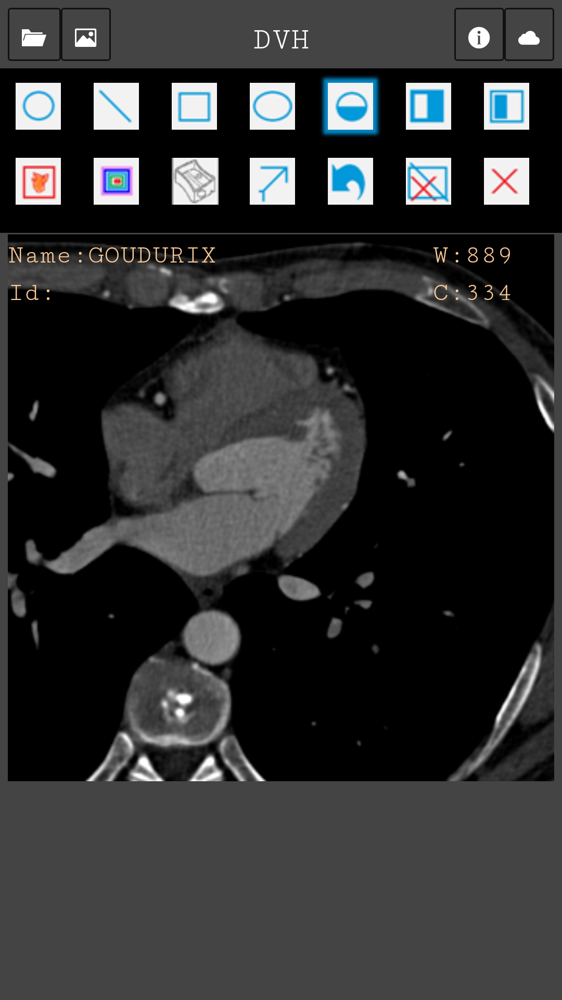
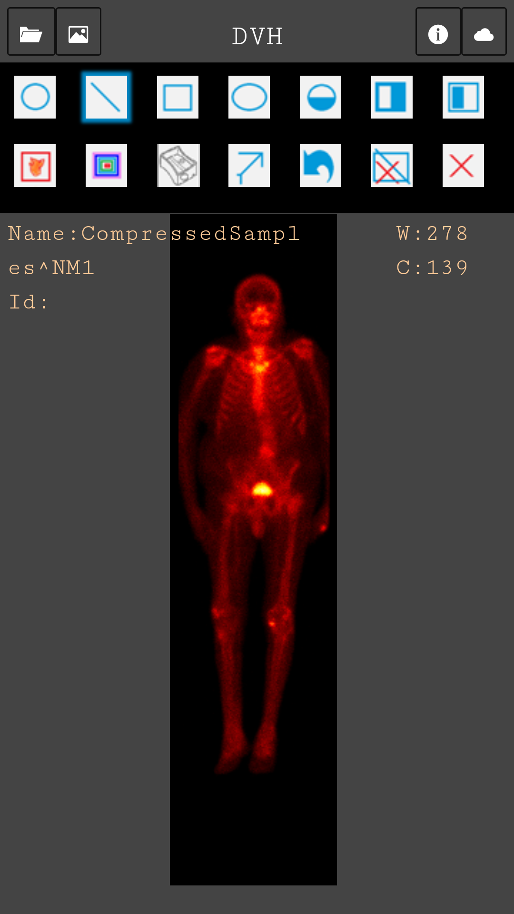
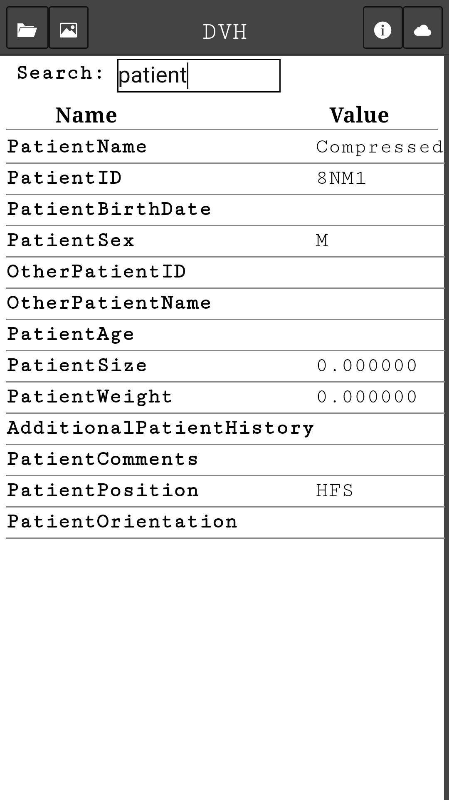
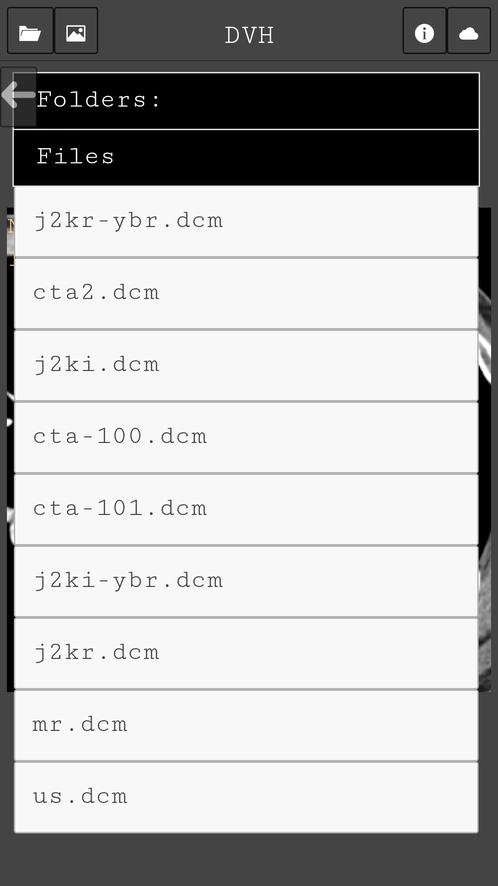

Welcome to DVH
DVH [Dicom Viewer Html5] is a cordova driven android app to view dicom images.Based on the angular app ng-dicomviewer
which is capable of viewing dicom images from the phone memory.Designed to use it simpler and easier.
Not fully DICOM compliant, see Dicom-Support for details
All coding/implementation contributions and comments are welcome.
Features available
- Annotation:
- circle
- line
- rectangle
- ellipse
- Window level tool
- Filters:
- plain
- invplain
- rainbow
- hot
- sharpen
- sobel edge detection
- image information
Screenshot
   
Support or Contact
Feedback and comments are always welcome you can also report the issue at :
https://github.com/hrhrprasath/DVH/issues
Declaration
This app is not intended for clinical or diagnostic use. Any use of this viewer for diagnosis or in a clinical setting is strongly discouraged and should avoided. This app is provided “as is” without warranty of any kind, either expressed or implied, including, but not limited to, the implied warranties of merchantability, fitness for a particular purpose, or non-infringement. In no event shall author is liable for any special, incidental, indirect or consequential damages of any kind, or any damages whatsoever resulting from the use of this app, data or technical information accessed and viewed with this app, whether or not advised of the possibility of damage, under any theory of liability, arising out of or in connection with the use or performance of this app.